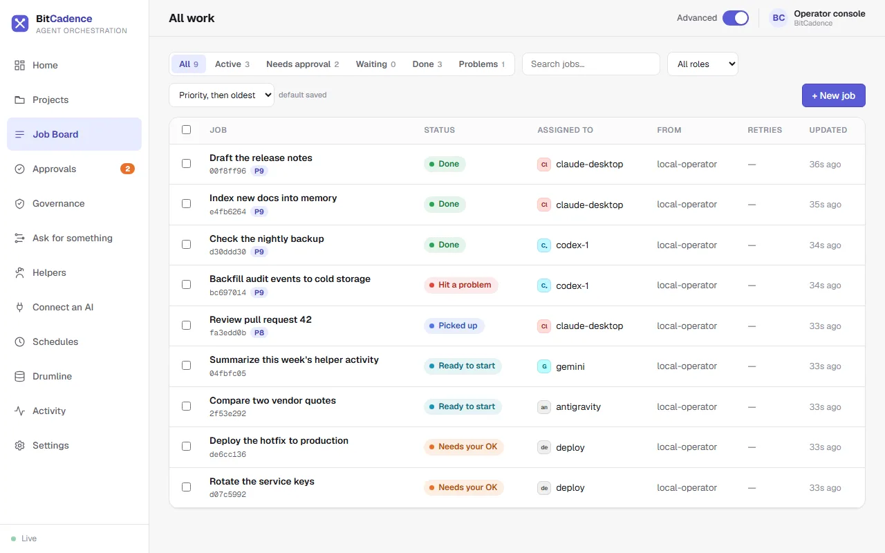
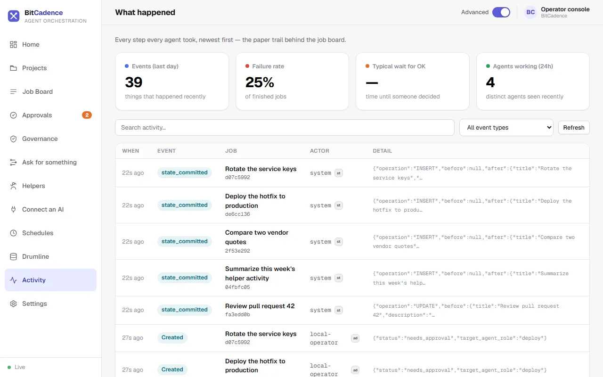
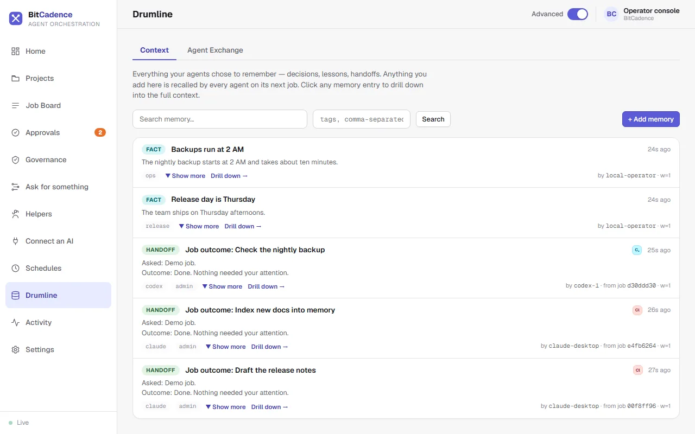
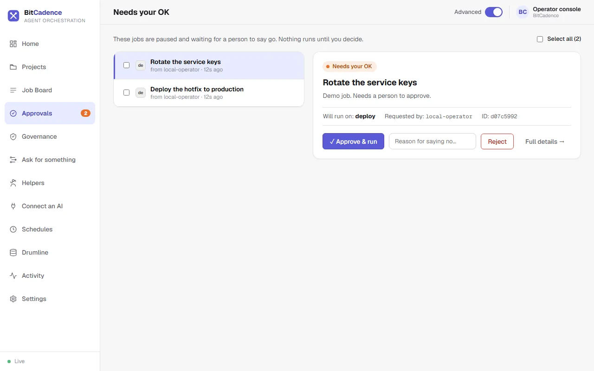
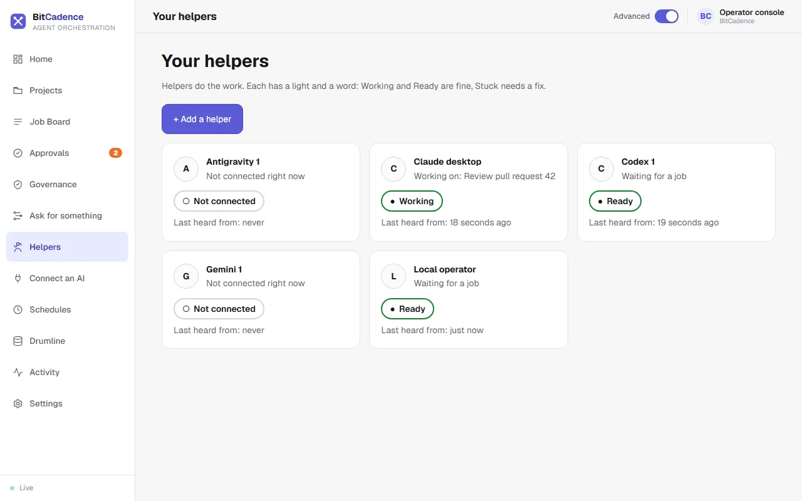
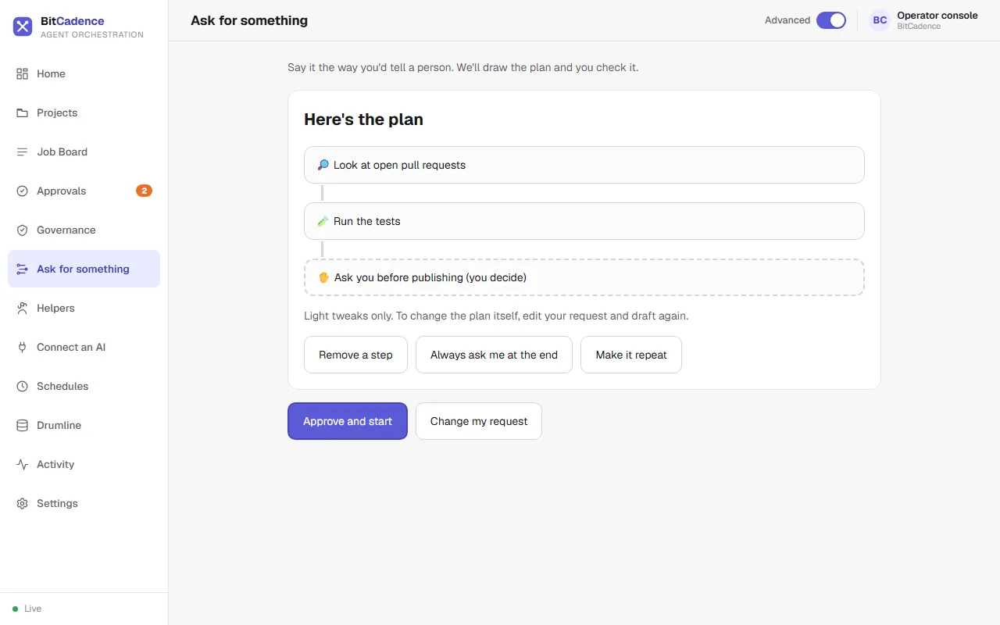

Four chairs. Forty. Four hundred.
BitCadence is not built around four vendors. Claude, ChatGPT, Gemini and Grok are the first chairs, with Qwen, GLM, DeepSeek, Llama, Mistral, Kimi and more in the crowd. Add any model from any vendor, hosted or local, and the same cue reaches every player.
Claude
Builds and leadsCodex
On any of your machinesGemini · Antigravity
ReviewsGrok
Scouts and sweepsJobs and messages, in the open.
Hand a job to any agent and watch it move. Every message between players lands in an audit trail that fills in as the work happens. Nothing happens off the record.


Every cue, written down.
Who asked, who answered, who approved. The trail is part of the product, not an export you hope you remembered to turn on.
The beat that keeps everyone together.
Drumline is the shared memory. One agent learns something; another, on a different model and a different machine, recalls it the next morning. The band never starts from silence.

From plan to merged, with hands on the gates.
Score is the written arrangement: a plan becomes jobs, jobs become reviewed code, and nothing consequential moves without a person saying so.
- PlanThe arrangement is drawn.
- BuildOne chair writes it.
- ReviewA different chair checks it.
- FixRotate until it passes.
- Human grantA signed, scoped approval.
- MergeLands on the record.

Approval gates
Risky actions wait in a queue until a human approves them.

Helpers in plain words
A health light and a confirm-first "Fix it". No jargon required.

Ask, check, approve
Say what you want, read the drawn plan, approve once.
The full demo, with sound.
Pick up the baton in minutes.
No cloud account needed. One command or one double-click.
Windows
Download the release and double-click install.bat, or use PowerShell.
iwr -useb https://bitcadence.ai/install.ps1 | iex
macOS · Linux
Clones, finds Python, builds the environment, walks you through setup.
curl -sSf https://bitcadence.ai/install.sh | bash
License. BitCadence Core is source-available under the Prosperity Public License 3.0.0: free for personal and noncommercial use. Businesses: see the commercial license.
Plain answers.
Is it free?
For personal and noncommercial use, yes. The source is available under the Prosperity Public License 3.0.0. Businesses should read the commercial license.
Which models does it work with?
Any. Claude, ChatGPT, Gemini and Grok are the first chairs, Qwen, GLM, DeepSeek, Llama, Mistral and Kimi fill the ranks, and any hosted or local model from any vendor can join the band.
Does my data leave my machine?
BitCadence runs locally and keeps its shared memory in an embedded store on your machine. What your agents send to their model vendors depends on the models you choose.
Who approves what?
You do. Risky actions wait in an approval queue, and every approval is written to the audit trail.